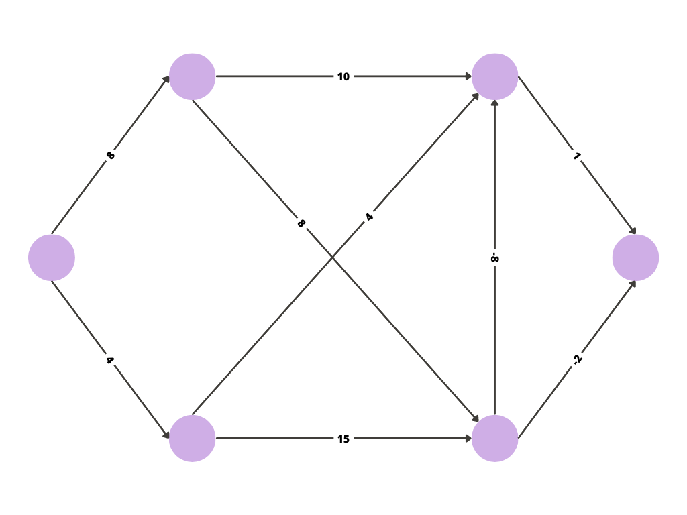

This is the graph for which we are going to visualise the process of the Bellman-Ford algorithm step wise.
This is the graph for which we are going to visualise the process of the Bellman-Ford algorithm step wise.
BEGIN
Selecting the starting node of graph and
denoting it by "s".
Cost for all nodes set as infinite, until they are visited and have been assigned value.
The edge being visited is denoted by a red arrow.
After evaluating, if the cost is minimum till that point of consideration,
the edge is denoted in green.
The cost for traversing this edge is 20, hence 20 is assigned
to the corresponding node.
The next node is being visited.
Similarly, the shortest path for each node is being calculated.
Similarly, the shortest path for each node is being calculated.
Similarly, the shortest path for each node is being calculated.
Similarly, the shortest path for each node is being calculated.
Similarly, we will calculate the shortest paths for visiting all nodes from
s.
Now with the red path we are evaluating whether any improvement is possible in the cost.
Since there was improvement in cost for the node, the value at the node has been replaced by the minimum of both the costs.
Now with the red path we are evaluating whether any improvement is possible in the cost.
Now with the red path we are evaluating whether any improvement is possible in the cost.
Up to now, all shortest paths have been calculated that use at most 2 Edges . Now we will calculate using at most 3 edges.
Now with the red path we are evaluating whether any improvement is possible in the cost.
Now with the red path we are evaluating whether any improvement is possible in the cost.
Since there was improvement in cost for the node, the value at the node has been replaced by the minimum of both the costs.
Now with the red path we are evaluating whether any improvement is possible in the cost.
Similarly, with the red path we will continue to evaluate the rest of the graph for any possible improvement in cost.
The green edges denote the shortest/least cost paths for traversing the
nodes.
END
BEGIN
d ( v [1]) ← 0
FOR j = 2,..,n DO
d ( v [ j ]) ← ∞
FOR i = 1,..,( |V| - 1 ) DO
FOR ALL (u,v) in E DO
d (v) ← min(d (v), d (u)+ l (u,v))
FOR ALL (u,v) in E DO
IF d (v) > d (u) + l (u,v) DO
Message: "Negative Circle"
END